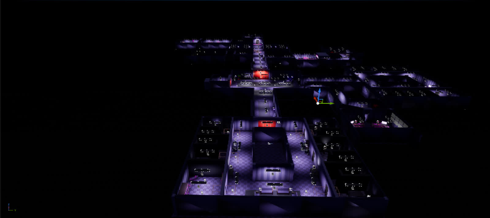
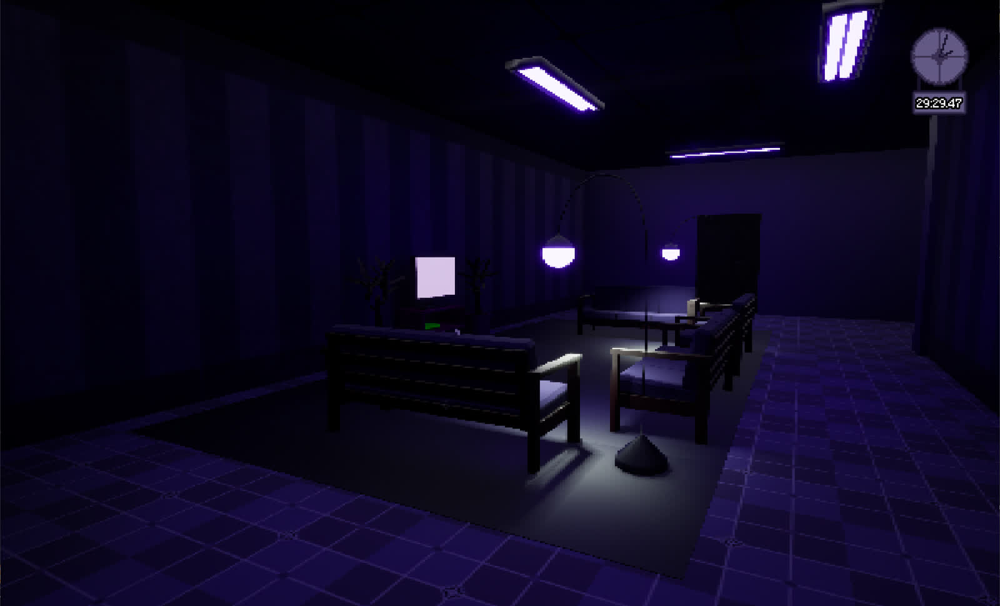
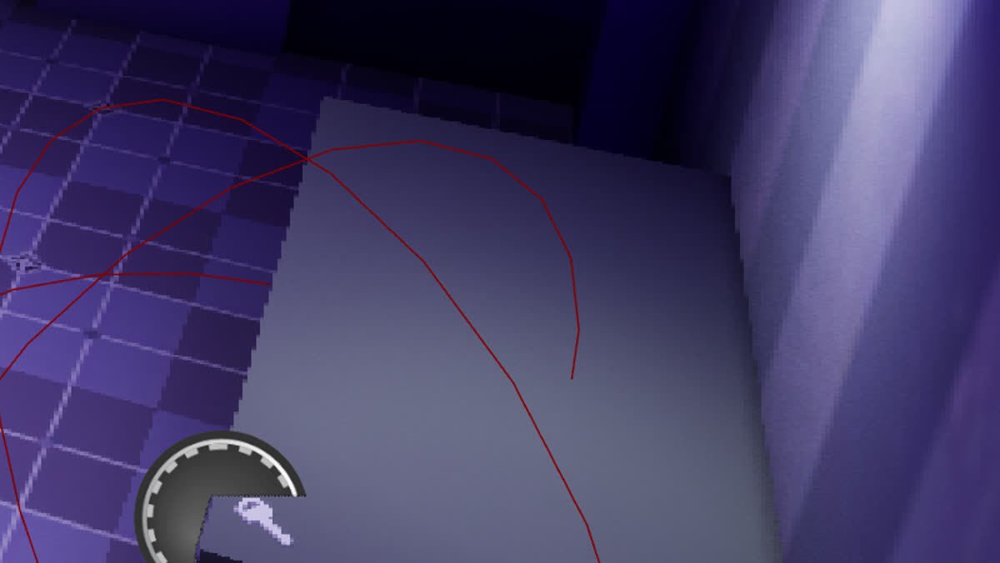
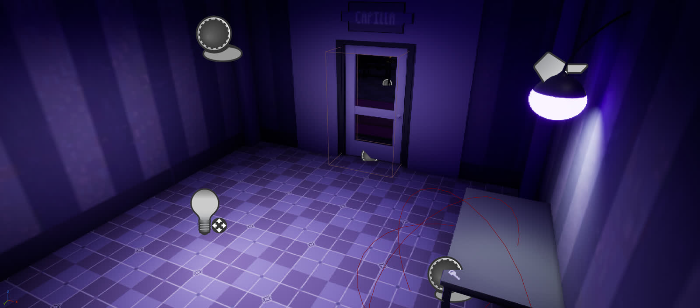
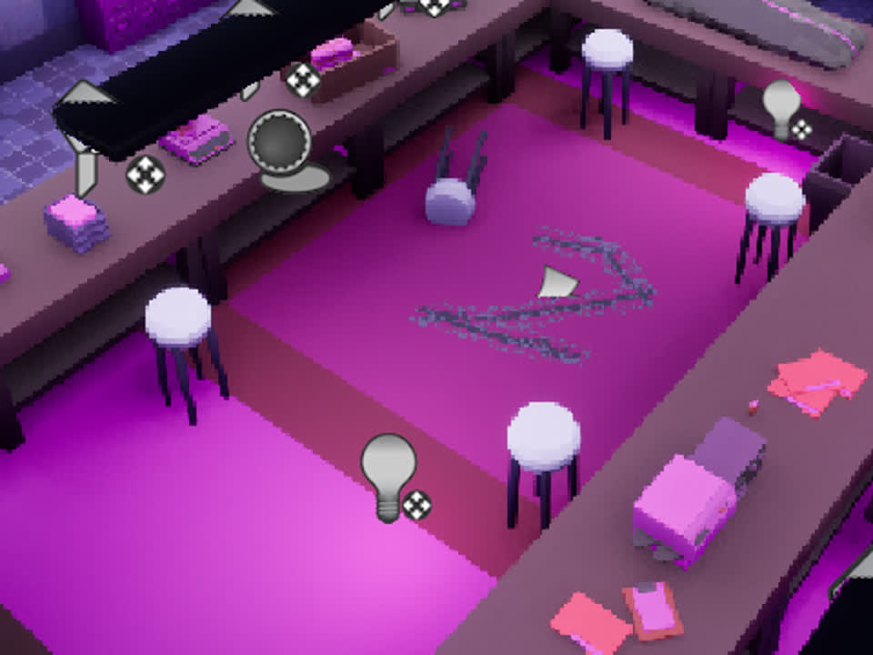
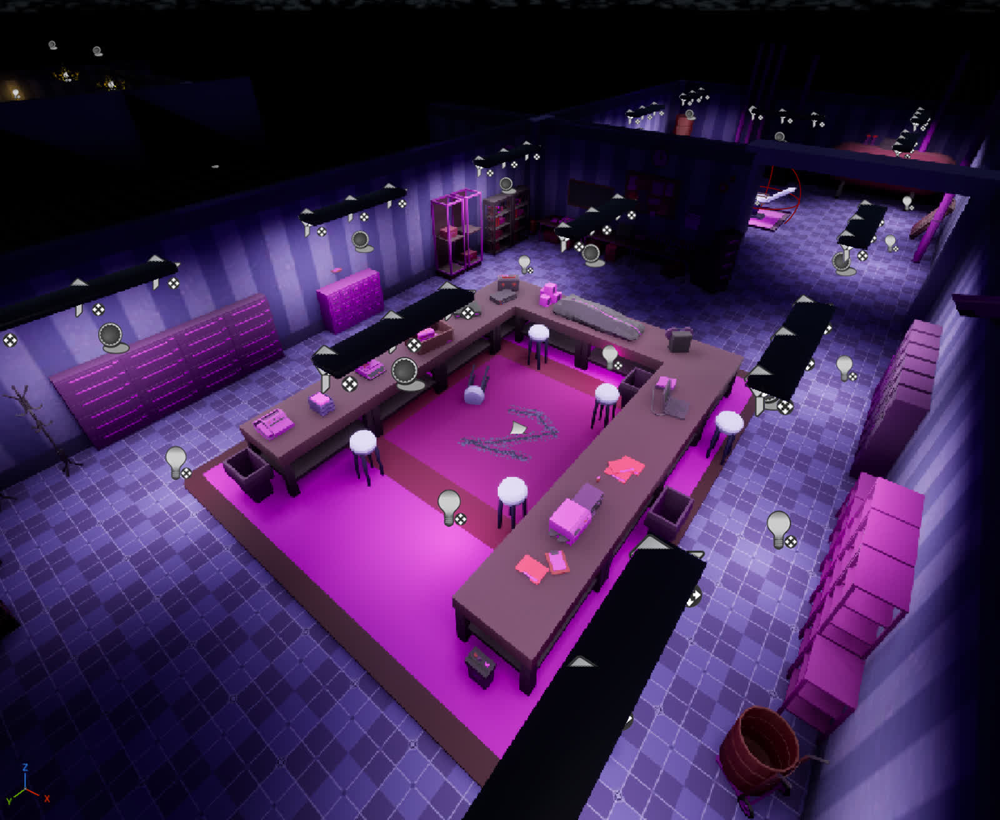
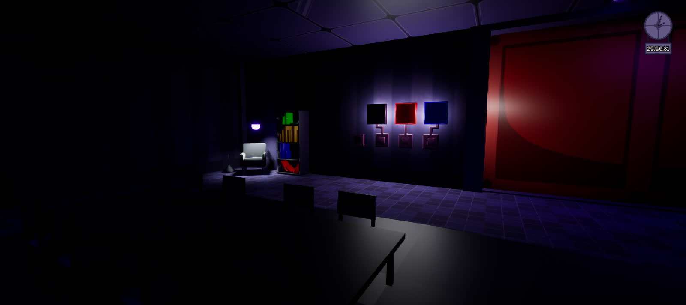

Dark Depths.
Salir del laboratorio empieza por entenderlo.
Un juego de terror y puzles en primera persona. Explorar habitaciones, localizar pistas y abrir accesos forma parte del mismo problema: encontrar la salida antes de que se agote el tiempo.
Diseñar el recorrido y vestirlo para jugar
Me encargué del diseño de niveles, las mecánicas y la programación. También diseñé los puzles y el recorrido del jugador, y vestí el escenario colocando los elementos que dan contexto a cada espacio.
Trabajamos el mismo equipo de tres personas de 2 Valhalla: Rafa en arte y Javi en interfaces, documentación y marketing. Esta vez el desarrollo duró cuatro meses.
Del espacio completo a lo que ve el jugador
El laboratorio se articula mediante habitaciones y pasillos. El trabajo de nivel y vestido puede leerse a dos escalas: la conexión entre espacios y la disposición de muebles, luces y pistas dentro de cada zona.

Identidad de cada zona
El mobiliario distingue los espacios y les da contexto. La recepción combina asientos y estanterías; el laboratorio concentra mesas de trabajo y equipamiento.

Visibilidad limitada
Los puntos de luz dejan parte del entorno en sombra. Este fragmento muestra la aproximación a una puerta y cómo cambia lo visible al desplazarse.
7 s · Corrección de sombras para el portfolio. No muestra apertura ni resolución de un puzle.
Buscar información también es avanzar
Un objeto como requisito de acceso
Una llave situada sobre la mesa se relaciona con una puerta. El entorno contiene el objeto necesario para superar una barrera, apoyado por los Blueprints de llave y puerta.

Ver la llave en su contexto

Una pista en el suelo
El «2» del laboratorio es una pista para el teclado numérico. La información está integrada en el espacio: observar el escenario forma parte de la búsqueda de la respuesta.

Ver la pista en su contexto

Manipulación, comprobación y puerta
El puzle de colores separa las piezas que se modifican del componente que comprueba la respuesta y referencia la puerta. Es una forma de organizar la lógica del desafío para ajustar cada parte.

La oscuridad también tiene reglas
FirstPersonCharacter reúne movimiento e interacción. La linterna comprueba que quede batería antes de encenderse, inicia un temporizador de consumo y lo detiene al apagarse. La función de consumo resta batería, limita el valor y apaga la luz cuando llega a cero.
Esta relación entre visibilidad y recurso ofrece un ejemplo concreto de cómo una mecánica se apoya en su implementación. Los Blueprints documentan la regla; el material disponible no permite evaluar todavía su balance durante una partida completa.
Ver Blueprint completo · Encendido de la linterna
Abrir la imagen para leer los nodos a resolución completa.
Ver Blueprint completo · Consumo de batería
Comprobar cómo se leen las pistas
El siguiente paso sería observar si los jugadores distinguen los objetos útiles del vestido del escenario, relacionan el «2» con el teclado y entienden qué cambia al resolver cada puzle.
Comparar sus recorridos y los puntos donde se detienen ayudaría a ajustar la colocación de pistas, la iluminación y el feedback. Es una propuesta de validación; no se presentan resultados de pruebas que no se hayan documentado.
El equipo
- Cristian Rodríguez Díaz
- Diseño de niveles, mecánicas, puzles y recorrido; vestido del escenario y programación.
- Rafa
- Arte.
- Javi
- Interfaces, documentación y marketing.
- Recursos adicionales
- El proyecto incluye recursos externos, StarterContent y Megascans. El vestido del nivel no implica autoría de todos los modelos.